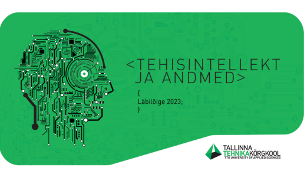
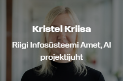
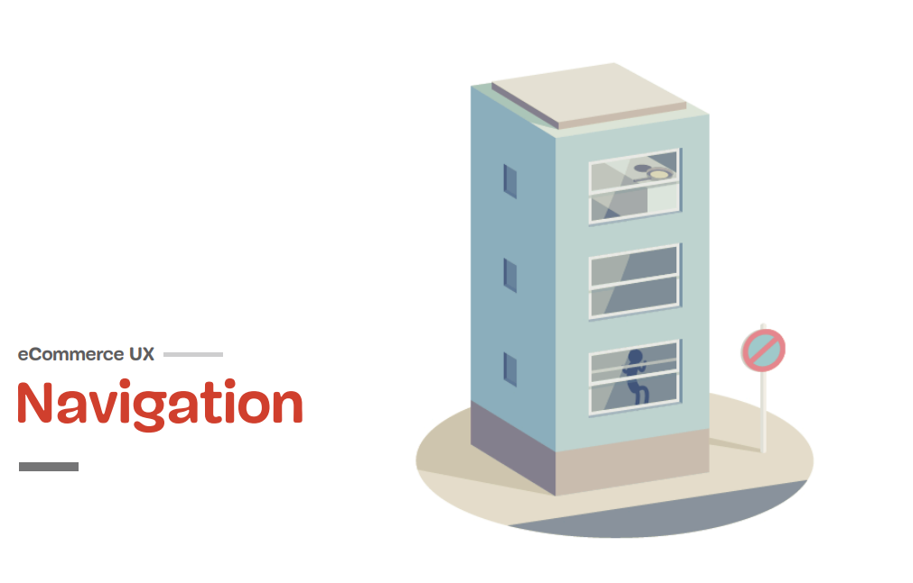

kes ma olen?
Olen Ursula, UX/UI disaini eriala
lõpetav tudeng.
Lisaks teooria õppimisele, olen alates 2022. aasta detsembrist teinud järjepidevalt praktilist tööd. Asutasime kahe kursuseõega õpilasfirma "Õ", millest kasvas välja iduagentuur Kolm Punkti, mis 2023 novembris leidis oma juriidilise keha.
Kolm Punkti on kasutajakogemuse uuringuid pakkuv agentuur, kelle portfelli kuuluvad mitmed suuremad ja väiksemad UX/UI projektid ning laual on veel mõned ootel.
Oma praktikatööd oleme kõik ise välja otsinud ja ettevõtetega kaubale saanud. Esialgu võtsime oma väljateenitud palga välja teadmiste ja kogemuste näol, aga alates 2024. jaanuarist teeme tasulisi töid.
Üks minu suur jõuallikas on minu pere. Perekond on mulle kõige olulisem. Saan kõikideks oma tegemisteks vajalikku tuge oma suurelt lähedaste ringilt. Töö kõrvalt jääva vaba aja veedan enamuse ajast just nendega.
Lisaks perele on minu teine väeallikas laulmine. Naiskooris laulmine vabastab tööpingetest ja viib mõtted mitmeks tunniks reaalsuset eemale. Peale laulmist on alati hea igapäevatoimetuste juurde tagasi minna.
Minu rollid Kolmes Punktis
uuringute läbiviimine
veebianalüüsid
veebilehe loomine ja haldamine (Voog, WP)
kliendikülastused, läbirääkimised
projektijuhtimised
raamatupidamine
Mulle meeldib
koostada veebilehtedele tehnilist
analüüsi,
selleks kasutan erinevaid
veebitööriistu:
PageSpeed Insights |
GTMetrix | webpagetest.org | uptrends.com
jne.
Kasutan
VSCode’i projektide üleslaadimiseks GitHubi
ja koodi kirjutamiseks phcode’i.
Arenguportfooliot teen Bootstrapi
template peale.
Olen tugev
erinevate uuringute läbiviimises,
veebilehe analüüside tegemises,
tehnilises taiplikkuses,
ja
paljus muus, mida UX/UI disaineri töös vaja.
Olen õppinud käsitlema
mitmeid UX/UI disainerile vajalikke
programme ja tööriistasid:
Whimsicalis valmib sitemap ja projekti
dokumentatsioon,
Figmas wireframe ning
lõplik prototüüp,
taske haldan
Notionis,
Photoshop, Illustrator,
After Effects
lisaks on mulle ka väga
tuttav ja omane canva.com keskkond
Konverentsid | Koolitused
-
World Usability Day - WUD
aeg: 2023 21-24 november
WUD kava ja lektoridorganiseerija: Trinidad Wiseman
Aasta kõige suurem üritus UX/UI disaneritele. Sain sõlmida kontakte ja võimalike koostööpartneritega tutvuda. Lisaks suurepärastele lektoritele üle terve maailma, oli võimalik kohapeal saada väga praktilisi nõuandeid. Näiteks tänu Trinidad Wiseman tütarettevõttele Intelex sain teadlikumaks, kuidas veebipõhise kasutajamugavuse ja avaandmete analüütika lahendustega saab kiire ülevaate sellest, mis ettevõtte veebiportaalis tegelikult toimub.
-
Tehisaru konverents | Tehisintellekt ja andmed

aeg: 2023 09.november
Tehisaru kava ja lektoridorganiseerija: Tallinna Tehnikakõrgkool
Suurandmed ja algoritmid aitavad masinatel teha otsuseid, mis mõjutavad inimeste igapäevaelu, tarbimist ja isegi poliitikat aina enam. Oma Data Triggeri projekti jaoks käisin saamas teadmistele täiendust, kuidas ja kas on võimalik liidestada AI-d meie projekti.
-
StarterTartu programm
aeg: 2023 21.09 - 22.november
STARTER@Tartu kava ja tutvustusorganiseerija: Tartu Ülikool
Täiendasin ennast StarterTartu programmis, kus osalesin järgmistes loengutes: ärimudeli modelleerimine, toote- ja teenuse disain, toote-teenuse turundus ning tulumudelid ja rahastamine. Väga intensiivsete loengute kaudu õppisin, kuidas startup ettevõtte loomine käib. Ühe praktikaprojekti Data Trigger tarvis oli saadud teadmistest väga palju kasu. Kasutasin igal loengul võimalust ning rääkisin lektoritega, kellest mõnega tekkis ka parem kontakt ja on kujunenud mentorlussuhe.
-
E-Kaubanduse UX konverents

aeg: 2023 10. mai
Konverentsi kava ja esinejadorganiseerija: Eesti E-Kaubanduse Koda
Konverents keskendus kasutajakogemuse parandamisele ja e-poe müügi kasvatamisele. Peaesinejaks oli Vitaly Friedman, kes võttis lahti e-poe kliendi teekonna ning analüüsis igat etappi ning jagas soovitusi, kuidas seda paremaks muuta. Tootelehel peab pildi kõrvale ära mahtuma kõige olulisem info (alla panna vähem olulisem info) - ainuüksi seda soovitust olen hiljem oma töös kasutanud. Lisaks palju muud kasulikku.
-
Sissejuhatus programmeerimisse Python keeles

aeg: 2022 aprill-mai | 52 ak tundi
Tunnistusorganiseerija: Taltech
Omandasin esialgsed oskused Pythoni keeles programmeerimise põhialustest. Sain aru, et see ei ole minu jaoks nii keeruline, kui ma arvasin. Peale seda koolitust oli mul oluliselt rohkem julgust kandideerida Vocosse. Esialgu kandideerisingi programmeerimise alale.
-
Software tester kursus
aeg: 2021 juuli-detsember | 159 ak tundi
Sertifikaatorganiseerija: Software Development Academy
Esimene IT-maailma-teemaline koolitus ja kannapöörde tegemise alguspunkt. Peale tarkvara testija inglise keelse koolituse läbimist olin kindel, et töö, mida edaspidises elus tegema hakkan, on vähesel või suuremal määral seotud IT-maailmaga.
Lektorid väljastpoolt kooli | Iseseisvad veebikoolitused
Kasutajamugavuse testimine
Aeg: 2023 veebruar
Koolitaja: Age
Arus | Iglu UX/UI analüütik
Kasutajakogemuse analüüsi aines andsid
loenguid praktikutest lektorid, sest
minu töös on vajalik saada arusaama
laiemast pildist.
Kasutajamugavus ja sihtrühm
Aeg: 2023 veebruar
Koolitaja:
Joonas Kessel | Iglu
Lektor Kessel keskendus täpsemalt
nendele teemadele, kuidas määrata
sihtrühma ning mis täpsemalt on
kasutusmugavuse uuring.
Prototüüpimine
Aeg: 2023 veebruar
Koolitaja: Laura Streiman | Iglu
Esimest korda elus sain hakata kasutama
Figma rakendust. Sain hakata kiirelt
tegema endale selgeks programmi
põhitõdesid.
The Basics of HTML5 & CSS3
Aeg: 2022 oktoober
Koolitaja: Udemy
HTML ja CSS põhitõdedega tutvumine. Alustasin esimeste veebilehtede loomisega HTML-i ja CSS-iga.
After Effects Get Started course
Aeg: 2022 november
Koolitaja: Adobe
Alustasin After Effects põhitõdede selgeks tegemisega. Just see Adobe rakendus on saanud mulle kõige südamelähedasemaks ning tööd After Effectsis nautisin väga.
Logo Design in Adobe Illustrator
Aeg: 2023 jaanuar
Koolitaja: Udemy | Rawson Uddin
Kuna logo tegemine on selline oskus, mis igal veebidisaineril oma tööriistakotis olemas võiks olla, püüdsin läbida just sellesuunalisi koolitusi. Üks näide on siin.
Külaskäik Bitwebi koos kursusega KD22
Aeg: 2022 detsember
Vastuvõtja:
Elisabeth Raidma
Külastades arendusettevõtet Bitweb, oli
minu soov näha eelkõige seda, kuidas
töötab UX/UI meeskond koos
arendusmeeskonnaga.
10 Essential Design Tips for Illustrator
Aeg: 2022 november
Koolitaja:
Envato Elements | Dan White
Ees ootas koostöö müügiesindajatest Voco õppuritega, kellele pidime tegema kas logo, veebilehe või mõne muu graafilise disaini töö.
UX Design: How To Get Started (A Full Guide)
Aeg: 2022 oktoober
Koolitaja: EAJ & Smart | Amrbr
Ainult koolipingist tarkus ei tule ning
õppisin ka peale koolitunde. Loeng koos
paljude erinevate nippidega oli põhjalik
ja kasulik.
TULEVIKU EESMÄRGID
Hakata looma meeldejäävaid ja intuitiivseid digikeskkondasid, mis vastavad kasutajate vajadustele ja eesmärkidele.
Arendada oma oskusi nii UI, UX kui ka teistes sarnastes valdkondades - nt CX. Soovin omandada erinevate disainitööriistade kasutamise oskuseid, keskenduda kasutajaliideste loomisele ja testimisele ning järgida disainiprintsiipe.
Lisaks praegustele oskustele ja huvidele UX/UI disainis, uurida süvitsi WCAG-nõudeid ning kuidas neid rakendada. Suur rõhk on püüdel keskenduda säästliku veebikeskkonna arendamisele.